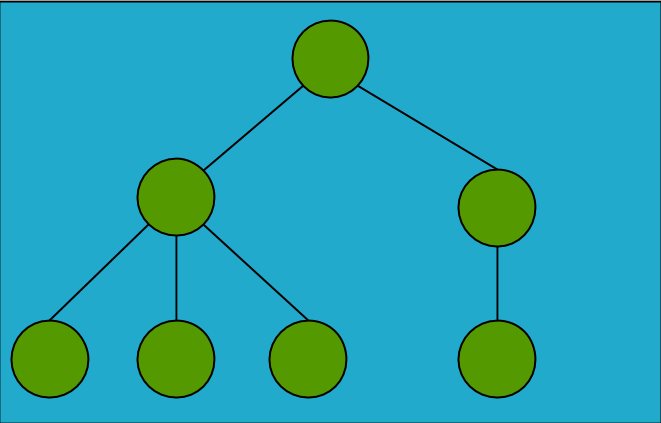
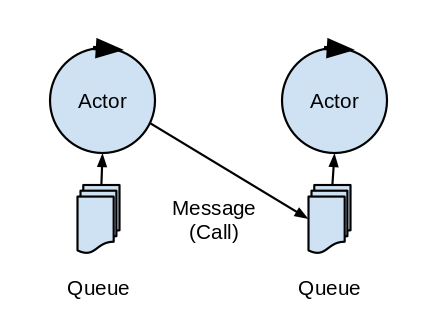
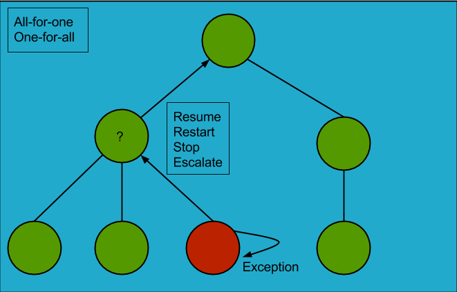
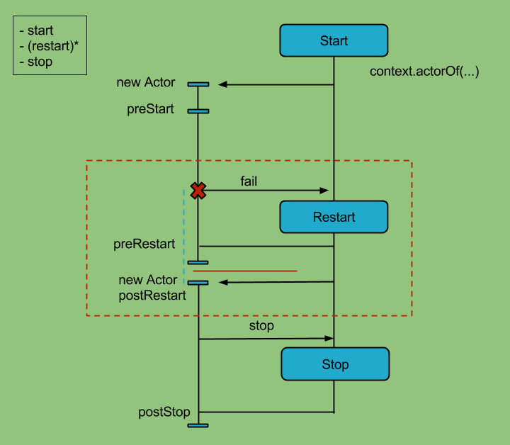

Going reactive with Akka
Webstep faggruppemøte - funksjonelle språk

Agenda
- Actor-modellen
- Workshop del 1
- Feilhåndtering
- Workshop del 2
Del 1- Actor-modellen 
Historie - noen viktige punkter
- Carl Hewitt et al. 1973: Actors, modell for forskning på kunstig intelligens
- Gul Agha, 1986: ACTORS: A Model of Concurrent Computation in Distributed Systems
- Ericsson, 1995: første kommersielle plattform som gjør bruk av Erland/OTP
- Phillip Haller, 2006: implementert i standardbiblioteket i Scala
- Jonas Bonér, 2009: Akka
Tråder (theads)
CPUene blir ikke raskere lenger, men de blir "bredere"
- Flere kjerner på en brikke som deler minne
- Virtuelle kjerner som deler en fysisk kjerne
Programmer som kjører må gjøre bruk av disse kjernene
- Kjøre flere programmer i parallell (multi-tasking)
- Kjøre flere deler av samme program i parallell (multi-threading)
Actor-modellen
Actor-modellen består av objekter og beskriver hvordan disse objektene samhandler.
Hva er klokken?
12:05
Hva er en Actor?
- Et objekt med en identitet
- Har oppførsel
- Samhandler ved å sende askynkrone meldinger
actorA
→
actorB
Actor trait
type Receive = PartialFunction[Any, Unit]
trait Actor {
def receive: Receive
...
}
Eksempel på en Actor
class Counter extends Actor {
var count = 0
def receive = {
case "incr" => count += 1
}
}
Kan ikke se at CounterActor har tilstand. Får ikke noe svar tilbake.
class Counter extends Actor {
var count = 0
def receive = {
case "incr" => count += 1
case "get" => sender ! count
}
}
Actor Context
trait ActorContext {
def become(behavior: Receive, discardOld: Boolean = true): Unit
def unbecome(): Unit
...
}
trait Actor {
implicit val context: ActorContext
}
Endre oppførsel med become/unbecome
class Counter extends Actor {
var count = 0
def receive = {
case "incr" => count += 1
case "get" => sender ! count
}
}
class Counter extends Actor {
def counter(n: Int): Receive = {
case "incr" => context.become(counter(n + 1))
case "get" => sender ! n
}
def receive = counter(0)
}
Starte og stoppe Actors
trait ActorContext {
def actorOf(p: Props, name: String): ActorRef
def stop(a: ActorRef): Unit
...
}
An Actor Application
class Main extends Actor {
val counter = context.actorOf(Props[Counter], "counter")
counter ! "incr"
counter ! "incr"
counter ! "incr"
counter ! "get"
def receive = {
case count: Int =>
println(s"count was $count")
context.stop(self)
}
}
Actor - behandling av meldinger
En Actor er entrådet
- Meldinger mottas sekvensielt
- Eventuell endring av oppførsel gjøres før neste melding behandles
- Det å prosessere en melding er en atomær enhet
Blocking erstattes av køing av meldinger

The Actor Model of Computation
Ved mottak av en melding kan en Actor gjøre en kombinasjon av:
- Sende meldinger
- Opprette actors
- Bestemme oppførsel for neste melding
Workshop - del 1
For å gjennomføre første del av workshop:
- git clone https://github.com/rossgard/going-reactive
- Start workshop ved å kjøre going-reactive/activator ui
- Velg "Open existing app" og velg katalogen going-reactive/going-reactive
Del 2 - Feilhåndtering
Garantert leveranse av meldinger
Vær så snill og gjør
Hørte du?
Leveransegaranti
- at-most-once
- at-least-once
- exactly-once
Feilhåndtering i asynkrone systemer
Hva gjør en hvis et unntak oppstår?
Supervision
Supervision eksempel
import akka.actor.OneForOneStrategy
import akka.actor.SupervisorStrategy._
import scala.concurrent.duration._
override val supervisorStrategy =
OneForOneStrategy(maxNrOfRetries = 10, withinTimeRange = 1 minute) {
case _: ArithmeticException => Resume
case _: NullPointerException => Restart
case _: IllegalArgumentException => Stop
case _: Exception => Escalate
}
Actor livssykel
Actor livssykel - "hooks"
trait Actor {
def preStart(): Unit = {}
def preRestart(reason: Throwable, message: Option[Any]): Unit = {
context.children foreach (context.stop(_)) // default behavior
postStop()
}
def postRestart(reason: Throwable): Unit = {
preStart()
}
def postStop(): Unit = {}
...
}
Lifecycle Monitoring - Death watch
trait ActorContext {
def watch(target: ActorRef): ActorRef
def unwatch(target: ActorRef): ActorRef
...
}
The Error kernel
Ta vare på viktig data nær toppen, deleger risiko til løvnoder
- Restarter er rekursive
- Restarter skjer oftere nær løvnodene
- Unngå restart av Actors med viktig state